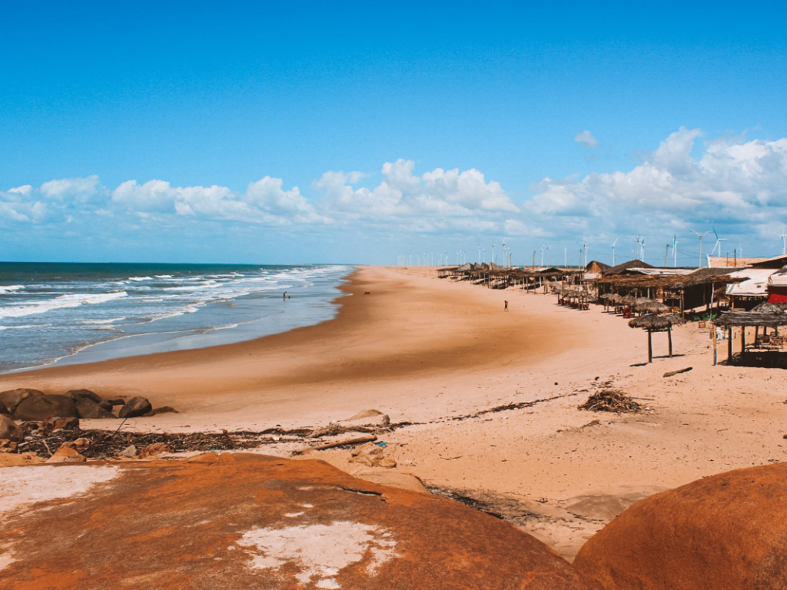

O Piauí é um estado localizado na região Nordeste do Brasil, com costa no Oceano Atlântico. Sua capital é Teresina. O estado é conhecido pelo Parque Nacional da Serra da Capivara, que abriga um dos mais importantes sítios arqueológicos do país. A economia piauiense baseia-se na agricultura, com produção de soja, arroz e algodão, além da pecuária e do extrativismo vegetal.

Voltar